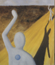
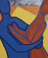

|  | |
|
 | |
|
The Reason for the Series
I never took 'spares' in high school since I much preferred being in the art studio or in the drama room. In grade 12, I chose to take OAC Visual Arts. The curriculum called for each student to produce 10 works by the end of the term, but my teacher felt students produced more thoughtful work if she only demanded a series of 6. The artworks presented here are my 6 paintings from that course.
My chosen iconography was "body language". I didn't originally intend to paint a series that told a story, but that is what developed. On her marking sheet for my 4th or 5th work, my teacher wrote "I know I'm not supposed to be marking you on the development of the story, but I can't seem to help it." I was unique among my classmates, in that my series was meant to be taken as a chronology. In some ways, I feel I failed to make each painting stand on its own. For example, the 5th painting is particularily meaningless when not surrounded by at least two adjacent works. However, it is an interesting feature that the series does have a "cyclic" nature in that it could wrap around and repeat itself.
| The First (of 6) | |
| The Story Begins
Much of my "research" into body language was taken from my own common sense interpretations, but some was justified by the writings of Desmond Morris, who studies human beings though the eyes of a zoologist*. He has discussed a behaviour called 'telegraphing' where two individuals who know each other very well will make a large display of waving if they spot each other from a distance. No mild acquaintances will make this gesture. In fact, I think that people find it awkward when they pass acquaintances for the single reason that they know the person is approaching for some time, and yet, won't greet them until they are just about to pass. This behaviour obviously tells the other person "I don't think we're terrific friends. I don't know you well enough." That message is a little difficult to deliver without a bit of awkwardness. This first painting sets up an encounter between two people. It is obvious from their telegraphic waves that they are well acquainted. Yes, the dots have meaning. No, the location does not. |
|
| * I highly recommend that anyone and everyone take out a Desmond Morris book from the library or try and catch his show on cable (TLC shows a series called "The Human Animal" that he hosts). Anyone who likes to people watch will find his stuff fascinating, and just about everyone will learn something about themselves. | |
I'd love to hear any of your thoughts or interpretations of my art.
If you have a collection of art works, I'd love to see it too.
email me